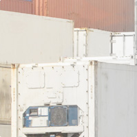

Профилактика и ремонт рефконтейнеров
Рефрижераторный контейнер — это, во-первых, транспортное оборудование и, во-вторых, мобильный холодильник. Он может пострадать в аварии или проржаветь, как и обычная тара, а может выйти из строя его техническая часть. Возможно ли в этом случае избежать срыва намеченных планов, порчи продуктов и серьезных расходов? Да, если воспользоваться нашими услугами по ремонту.
- Диагностика, ремонт и сервисное обслуживание холодильных агрегатов рефрижераторных контейнеров производства Carrirer, Thermoking, Sabroe, Seaсold;
- Ремонт и восстановление компрессоров, включая восстановление коленвалов;
- Ремонт корпуса контейнера, включая отслоение внутренней обшивки;
- Полная и частичная покраска корпуса;
- Выездной ремонт по Санкт-Петербургу и Ленинградской области. Выезд в другие регионы России возможен по отдельной договоренности;
- Техническое обслуживание рефконтейнеров на постоянной основе;
- Проведение диагностики и устранение неисправностей рефконтейнеров (Pre Trip Inspection).
Восстановление оборудования
Вашему оборудованию можно вернуть первозданный вид и функциональность даже при серьезных повреждениях. Мы отремонтируем рефконтейнер после ДТП, восстановим внешнюю и внутреннюю обшивку, несущие балки, наладим работу термоса, холодильной установки и микропроцессора.
Наши услуги по ремонту включают в себя:
- Работу с любыми марками холодильных установок.
- Полную диагностику электрической и холодильной части
- Профилактические работы ,увеличивающие срок работы агрегата (Замена подшипников электродвигателей, замена фильтров осушителей, замера токов, ремонт опор креплений электродвигателей и т.д.)
- Замену компрессоров всех марок
- Восстановительные работы (пайка) трубопроводов
- Замену радиаторов конденсаторов
- Замена и установка софта и конфигурации микропроцессора (контроллера
- Восстановление систем управления и автоматики холодильной установки.
- Замену любых агрегатов и узлов
- Восстановление герметичности коробки
- Устранение трещин и пробоин в обшивке, коррозии корпуса
- Стяжку сэндвич-панелей
- Восстановление и замену дверей, крыши, пола
- Сварочные работы
- Покраску
- Полную гарантию на все работы

Своевременная профилактика продлевает жизнь оборудования!
Как заказать диагностику и ремонт рефконтейнеров?
В зависимости от степени повреждения тары мы можем работать на Вашей территории или в собственном терминале. Точная стоимость работ определяется сразу же после осмотра. Кроме того, мы можем сами снять Ваш контейнер с транспортного средства и доставить его после ремонта в выбранное Вами место.
Для того чтобы заказать диагностику, ремонт или заключить договор на обслуживание, просто свяжитесь с нашими специалистами на сайте, по телефону, электронной почте.